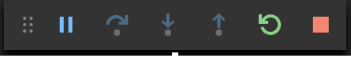
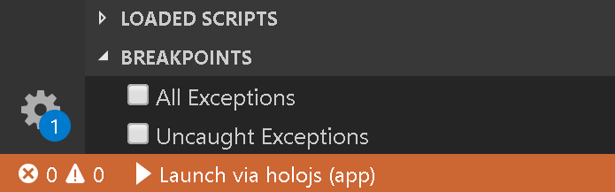
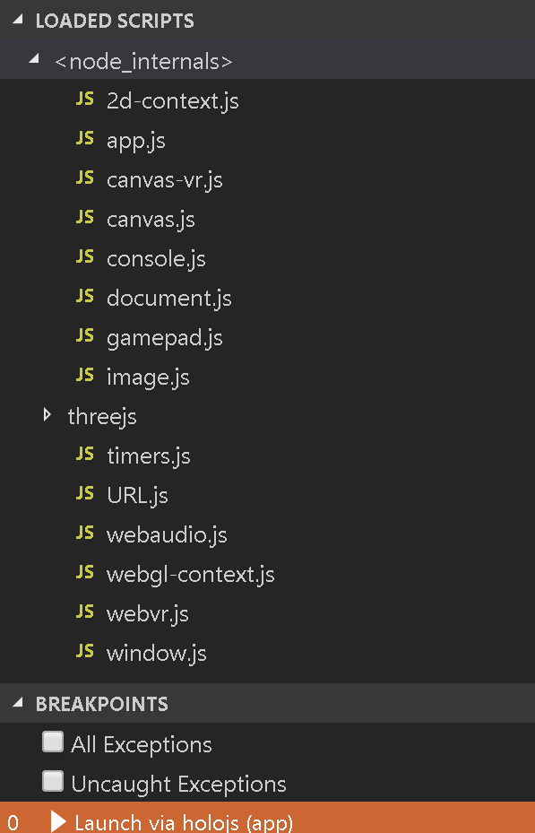

Get started with Spin
Spin is a development tool for creating VR and AR JavaScript experiences for Windows PCs, Windows Mixed Reality headsets and the HoloLens. You can create VR experiences in minutes using Spin and Visual Studio Code.Setup
-
Download spin
Spin is a command line utility. Download it from http://holojs.azurewebsites.net/spin-make/spin.zip and extract it somewhere on your computer.
Or from a command line:powershell Invoke-WebRequest -Uri http://holojs.azurewebsites.net/spin-make/spin.zip -OutFile spin.zip
powershell Expand-Archive -Path spin.zip -DestinationPath .\Note: While not required, you can add Spin to your PATH environment variable to make invoking it easier. The following examples assume Spin is in the PATH. -
Install Visual Studio Code
Create a Spin app from a ThreeJs template
-
"spin new"
Open a command prompt and run:spin new --path .\first-app --threeA new directory is created for the app and a new Visual Studio Code window is opened in the app's directory. -
F5 in Visual Studio Code
In Visual Studio Code, press F5 (Debug -> Start Debugging) to run the app. If a VR headset is connected the app will run in immersive mode, otherwise it will run in a 2D window.
Note:
In the absence of a VR headset, you can use the Windows Mixed Reality simulator to view the app in
immersive mode.
Refer to this link for more information: https://docs.microsoft.com/en-us/windows/mixed-reality/using-the-windows-mixed-reality-simulator
Edit, test and debug with Visual Studio Code
-
Open the app
'spin new' automatically opens the newly created app in Visual Studio Code. For existing projects, you simply do "File -> Open Folder" in Visual Studio Code. -
Run the app
Press F5. The app will start in the VR headset or on the desktop. Spin automatically created a debug configuration (.vscode/launch.json) when the app was created. -
Debugger control
Use the standard debugger controll buttons to pause, continue, step, etc:
 -
Breakpoints
To set a breakpoint in a running file, you must first open it from the list of loaded scripts. The loaded scripts list is located in the lower side of the debugger panel (Ctrl + Shift + D)

The list contains all scripts that make the app work, including internal scripts, WebGL framework scripts, etc. Your app's script is app.js

The app's render function is a good place to put a breakpoint on if you are debugging the animation:
 Note: Adding breakpoints in files from the Explorer panel is not supported yet. As a workaround, insert a temporary "debugger;" instruction above the line you want to break on.Note: Sometimes breakpoints cannot be set and the app will appear hung. There will be error messages in the "Debug console" panel and the "faulty" breakpoints appear grayed out:
Note: Adding breakpoints in files from the Explorer panel is not supported yet. As a workaround, insert a temporary "debugger;" instruction above the line you want to break on.Note: Sometimes breakpoints cannot be set and the app will appear hung. There will be error messages in the "Debug console" panel and the "faulty" breakpoints appear grayed out:
The solution is to remove the faulty breakpoints and restart debugging. -
Add and remove content
To add content, copy new files to the app's directory and list their relative paths in the app's JSON file:- Add to the "scripts" array if adding a script file to be executed. Scripts are executed in the order stored in the array.
- Add to the "resources" array if adding a resource file that will be loaded by scripts at runtime.
To remove content, delete files from the directory and remove their entries from the app's JSON file.
Sharing Spin apps
- Use the Spin View app from the Microsoft Store to view Spin apps on other devices or the HoloLens.
-
Distribute the Spin app
-
As a file
Create a XRSX file for the app using Spin Make and share it with others:spin.exe publish --source [path_to_app_json] --destination [path_to_xrsx_file]Note: The package is just a zip file.The app will start in Spin View when opened on the desktop or the HoloLens. -
Web hosted
Upload the app's directory to your website. Create a HTML file with a link to the app's JSON file using the xrs protocol handler, like this: xrs:http://holojs.azurewebsites.net/v8/vr-cubes.json. These links open in Spin View automatically.
To make things easier on the HoloLens, encode the URL (without the xrs: prefix) in a QR code and place it on your web page. Then run Spin View on the HoloLens, gaze to this QR code and say "scan". There are example QR codes on the app samples page
-